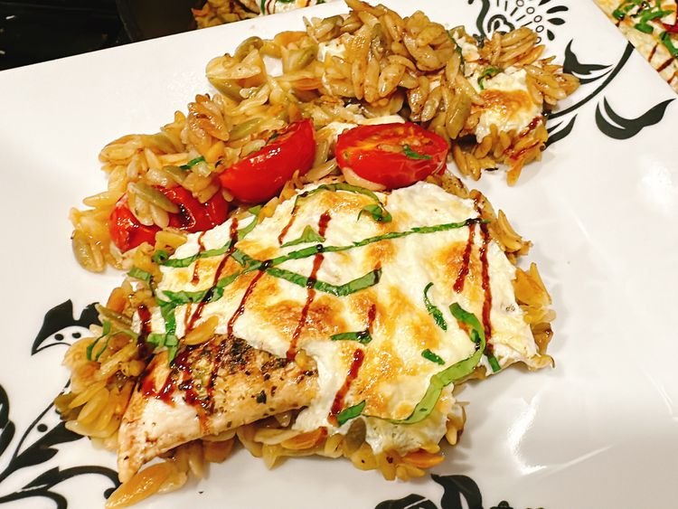

Back
One Pan Balsamic Chicken

This one pan balsamic chicken, ready in 40 minutes, is perfect for a weeknight dinner. Herb-seasoned chicken bakes with orzo, tomatoes, and mozzarella cheese, and is drizzled with balsamic glaze.
Ingredients:
-
2 skinless, boneless chicken breasts
-
1/2 teaspoon Cantanzaro herbs
-
1/4 teaspoon garlic granules
-
1/4 teaspoon onion powder
-
salt and freshly ground black pepper to taste
-
1 tablespoon olive oil
....
Steps
-
Preheat the oven to 425 degrees F (220 degrees C).
-
Slice chicken breasts in half horizontally to create 4 thin chicken breasts.
-
Pour olive oil into a deep cast iron skillet or other ovenproof skillet and place over medium-high heat until oil is hot.
-
Pour orzo into the skillet; add chicken broth and balsamic vinegar.
-
Bake in the preheated oven until an instant read thermometer, inserted near the center of chicken, reads 165 degrees F (74 degrees C), about 20 minutes.
...